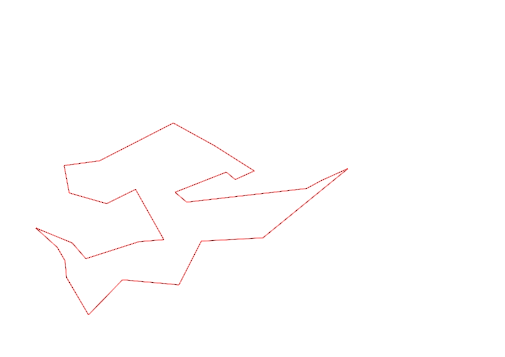
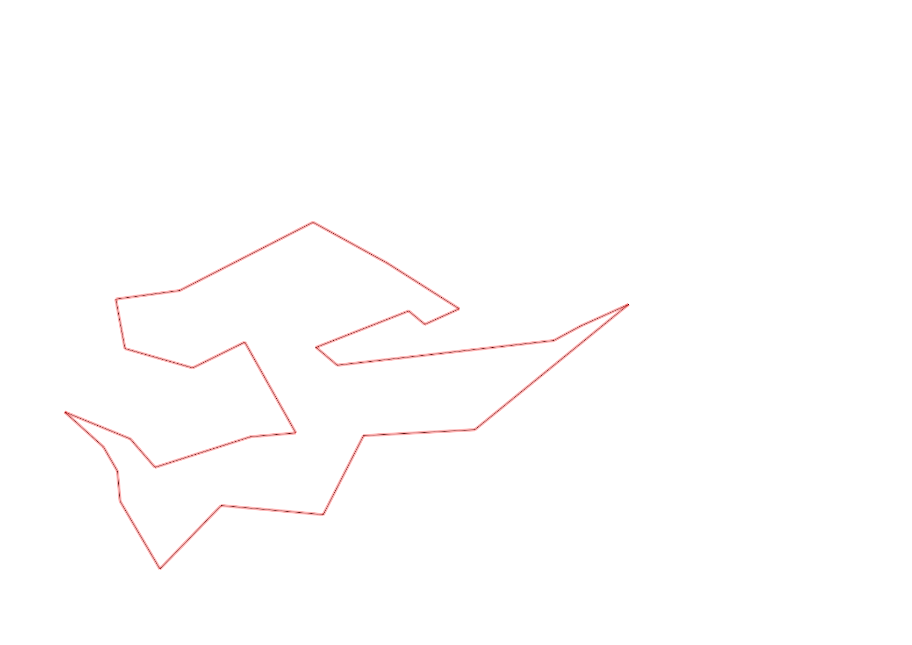

| Control |
Points |
Time Punched |
Distance |
Your Time |
Pace |
Place |
Fastest Time |
Median Time |
% Behind Fastest |
| 92 |
90 |
|
0.23 |
0:02:18 |
10:00 |
2 / 11 |
0:02:15 |
0:02:35 |
2% |
| 35 |
30 |
|
0.05 |
0:01:56 |
38:40 |
7 / 12 |
0:01:31 |
0:01:55 |
27% |
| 47 |
40 |
|
0.09 |
0:01:11 |
13:08 |
3 / 11 |
0:00:54 |
0:01:31 |
31% |
| 57 |
50 |
|
0.2 |
0:04:07 |
20:35 |
3 / 7 |
0:03:52 |
0:04:28 |
6% |
| 107 |
100 |
|
0.2 |
0:02:08 |
10:40 |
5 / 21 |
0:00:00 |
0:02:52 |
-% |
| 63 |
60 |
|
0.35 |
0:02:10 |
06:11 |
3 / 18 |
0:01:59 |
0:02:42 |
9% |
| 32 |
30 |
|
0.15 |
0:00:47 |
05:13 |
6 / 27 |
0:00:36 |
0:00:56 |
30% |
| 44 |
40 |
|
0.12 |
0:01:24 |
11:40 |
11 / 29 |
0:00:52 |
0:01:49 |
61% |
| 130 |
30 |
|
0.16 |
0:00:58 |
06:02 |
1 / 4 |
0:00:58 |
0:01:26 |
0% |
| 126 |
20 |
|
0.14 |
0:01:36 |
11:25 |
9 / 12 |
0:01:09 |
0:01:26 |
39% |
| 38 |
30 |
|
0.24 |
0:01:29 |
06:10 |
1 / 2 |
0:01:29 |
0:01:37 |
0% |
| 60 |
60 |
|
0.11 |
0:00:45 |
06:49 |
3 / 19 |
0:00:42 |
0:00:57 |
7% |
| 41 |
40 |
|
0.23 |
0:01:55 |
08:20 |
5 / 7 |
0:01:41 |
0:01:52 |
13% |
| 54 |
50 |
|
0.09 |
0:01:09 |
12:46 |
3 / 8 |
0:00:57 |
0:01:28 |
21% |
| 53 |
50 |
|
0.16 |
0:01:56 |
12:05 |
1 / 2 |
0:01:56 |
0:02:25 |
0% |
| 69 |
60 |
|
0.12 |
0:00:58 |
08:03 |
5 / 29 |
0:00:45 |
0:01:18 |
28% |
| 71 |
70 |
|
0.06 |
0:00:54 |
15:00 |
3 / 25 |
0:00:48 |
0:01:13 |
12% |
| 40 |
40 |
|
0.07 |
0:01:20 |
19:02 |
2 / 9 |
0:00:40 |
0:01:52 |
100% |
| 77 |
70 |
|
0.18 |
0:01:35 |
08:47 |
1 / 21 |
0:01:35 |
0:02:21 |
0% |
| 59 |
50 |
|
0.21 |
0:02:11 |
10:23 |
3 / 18 |
0:02:00 |
0:02:47 |
9% |
| 61 |
60 |
|
0.24 |
0:02:18 |
09:35 |
2 / 19 |
0:02:14 |
0:03:16 |
2% |
| 42 |
40 |
|
0.21 |
0:02:20 |
11:06 |
2 / 14 |
0:02:19 |
0:03:34 |
0% |
| 37 |
30 |
|
0.26 |
0:03:55 |
15:03 |
4 / 9 |
0:02:45 |
0:03:57 |
42% |
| 49 |
40 |
|
0.46 |
0:04:51 |
10:32 |
2 / 2 |
0:04:01 |
0:04:26 |
20% |
| 64 |
60 |
|
0.12 |
0:00:54 |
07:30 |
3 / 8 |
0:00:53 |
0:00:55 |
1% |
| 48 |
40 |
|
0.07 |
0:00:34 |
08:05 |
1 / 9 |
0:00:34 |
0:00:47 |
0% |
| 127 |
20 |
|
0.51 |
0:04:14 |
08:18 |
1 / 1 |
0:04:14 |
0:04:14 |
0% |
| Finish |
0 |
|
0.06 |
0:00:30 |
08:20 |
3 / 8 |
-1 day, 23:05:57 |
0:00:35 |
-99% |
Total Distance Covered: 5.09km
Points Scored: 1300
Late Penalty: 0
Final Score: 1300
Total Time: 0hours 52minutes 23seconds
Efficiency: 255.4 points/km
 
